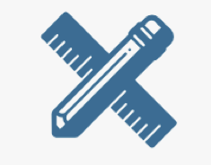
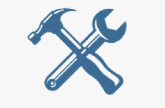
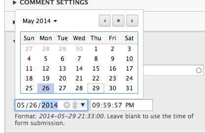
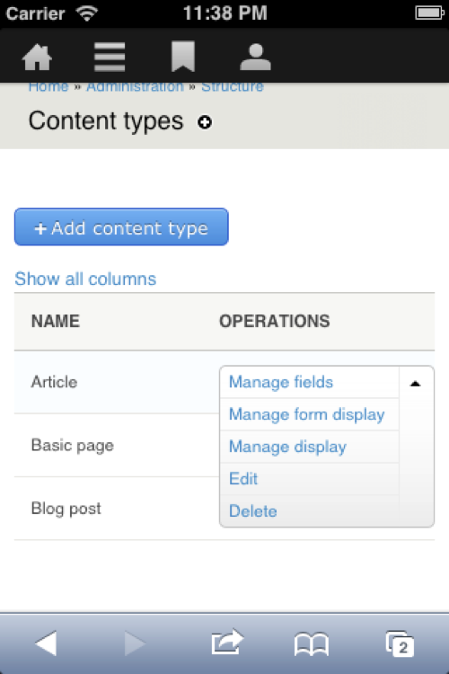
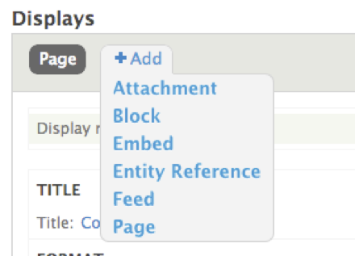

Build a Blog with Drupal 8 On the day it's released
By: Bob Kepford
Bob Kepford
Senior Drupal Developer
@kepford
We help organizations build highly impactful, elegantly designed Drupal websites that achieve the strategic results you need.
Digital Strategy
- Content Strategy
- Content Generation
- Result Metrics
- Marketing Automation Integration

Design/Theming
- Usability Testing
- Responsive Design
- Drupal Theming
- Annotated Wireframes

Development
- Drupal Support
- Custom Module Development
- Large Scale Systems Integration
- Security & Performance Expertise
What's New
- Fields
- HTML 5
- Better Content Editing
- Display & Form Modes
- Mobile
- Views
- Tour
- Accessibility
- Better Multi-language support
- CMI
- Web Services
Fields
Comments are now fields
New field types
- Entity Reference
- Link
- Email
- Telephone
- Placeholders
HTML5
New elements
- Picture element: Support
for responsive image displays
- Date element
- E-mail element
- Phone element

Content Editing
- CKEditor WYSIWYG
- In-place editing
- Insert inline images
- Save as draft
Form & Display Modes
- Customize entity forms
- Create and manage view modes for all entities
- Replaces Entity view modes module
Mobile
- Responsive themes
- Admin theme is mobile
friendly
- Mobile toolbar
- Overlay is gone!

Views
Views in Core!
- Most listings in core are now Views
- JSON Exports
- The same Views you know and love

Improvements to Blocks
- More hard-coded blocks are configurable.
- One block can be placed in more than one region!
- Custom block types
Tour!
- Easily create tours for your site.